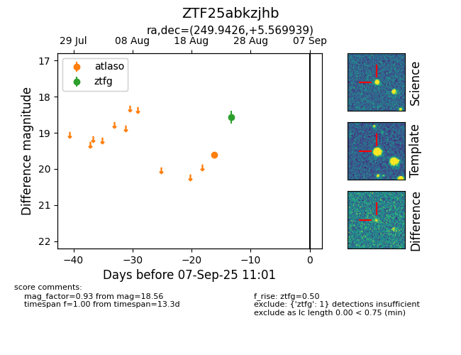

FINK: ZTF25abkzjhb
Lasair: ZTF25abkzjhb
ALeRCE: ZTF25abkzjhb
ZTF25abkzjhb (ztf,fink)
equatorial (ra, dec) = (249.9426,+5.56994)
galactic (l, b) = (22.0751,+31.70956)

last atlaso=19.60, ztfg=18.56
1 atlaso, 1 ztfg detections